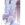

|

BlizzardAngel
Author of 6 Stories |
Disclaimer: I sadly don't own Ranma or any of the characters. Rumiko Takahashi does. I'm only using her awesome characters for fanfictional stories. So I repeat, Rumiko Takahashi is the Creator of Ranma ½
'...' indicates thoughts of the character
*...* will tell you when a flashback appears
Akane
Chapter 9
Most of the students watched the boy suspiciously. He never wanted to change with the rest of them. He always waited or changed somewhere else. It was really strange and they asked him but he would always give some excuse. The students never got any other reply so as time went on, they were slowly forgetting and soon dropped the petty subject.
The school bell rang and the students piled out of the school. Most were kids in groups, ready to hang out at the stores or go to their friend's house. There were few students that left the building alone but one in particular acted like it didn't matter.
"Konji! Hey Konji, wait up!" A boy with short blond hair came running towards the fellow student who was alone. "Hey. Me and the guys were wonderin' if you wanna hang out with us at Kou's house? We're gonna rent some movies and chill out." He smiled and brought his hand to the back of his head. "Well, you never seem to hang out with anyone so we thought you were free. So whadda ya say?" The blond stared at the other boy who stood with his hands in his pockets. He had very long, dark brown hair tied up at the nape of his neck and held softer facial features.
He notice Konji shaking his head from side to side.
"Sorry," Konji replied. "I have to go help a friend with some work. Maybe some other time when I'm not busy. I'll let you know, okay Souta? See you round." With a wave goodbye, Konji set off in the direction he was headed in before.
"Okay, bye! See you at school tomorrow."
Konji walked quite a distance from the school before coming to a halt in front a restaurant. He sighed in frustration as he noticed another restaurant was opening a few stores down.
"Great. Just what I need. More competition." With the turn of the key, the locked clicked and Konji opened the door. He walked to the back of the okonomiyaki restaurant and started to gather some supplies for the grill. Today wasn't any special than any other day, so he went on his usual routine to set up the restaurant.
His head suddenly turned suspiciously toward the front door.
"Get back HERE!" Someone was yelling and causing quite a commotion outside. Out of curiosity and a little concerned about costumers, he made his way out to the front of the restaurant to find a man in a apron chasing a little black pig with a butcher's knife. It was squealing like mad as it was frantically trying to get away from the man who wanted to kill it.
Konji was about to turn around when the sight of a bandanna on the little black pig caught his attention. Looking all too familiar, he decided to help the poor thing out. He walked out in front of it as it was heading in his direction and surprisingly, it jumped in his arms.
He looked down at it but the man with the knife stopped right in front of him, bent over and panting hard; Clearly out of breath.
"Oh, you little-" The man started as he got angrier by the second. "You're going to be very sorry that you tried to run away from me." The man looked up at the teen cradling the pig. He brought his hand up to his mouth and cleared his throat. "Ahem. S'cuse me, boy. May I have that pig your holding. I have to prepare him for some special guest in my restaurant, but he got away from me. The boy looked down at the pig and frowned.
"Prepare him? You were going to...kill my pig?" The older man looked surprised at first but then frowned deeply.
"You're pig? You own him? That's impossible. I found him wandering in the back of my restaurant last night." Konji looked at the man angrily. His acting was pretty good, but common sense did play its part.
"Could you not see that the pig has a bandanna on? If it was a stray, why would it have a piece of clothing on? What do you think, free food walks on by with clothes on, saying it's a stray? How dare you, next time I'll get you in real trouble for this!" Konji hissed at the man. He turned around and walked back into his okonomiyaki restaurant named 'Uchan's'. Konji sighed as he shut the door. He didn't know why he just fought for the pig but it just, felt right. He walked over to the counter and put the black pig down.
"Kwee!" The little black pig squealed.
"Yeah, yeah. Save your thanks. I'll be back. Gotta change."
The black pig stayed and watched the long pony-tailed boy leave. Minutes later, a teenaged-girl with black tights and purple top with a white trim, walked in. She wore a white bow tied at the top of her head. Her big brown eyes settled on the black pig, noticing that he didn't move from the spot she left him in.
"Well looks like I have to open the shop soon." She looked at the clock acknowledging that she had about twenty more minutes. "So are you hungry?" The little pig squealed and stood. She smile at the sudden reaction. It almost sounded like it could understand her. "I'll take that as a yes. A mini-okonomiyaki coming up!"
Ukyo made her speciality and actually had fun making something different such as a small okonomiyaki. With flawless and graceful movement over the grill, she finished and presented the black pig with the dish.
What had made her save the little animal? Was it that she felt bad for it? She thought as she watched the small pig gobble down his Japanese-style pizza.
She remembered that she had seen the small pig somewhere before, but she couldn't put her finger on it. She tried to think real hard but could not come up with anything. Her shoulders dropped down in defeat.
'Oh well.' She thought. 'I have to open up soon. It's just going to have to wait.' She noticed the pig staring at her as if saying, "I'm done!" She smiled softly.
"All right, little guy. I'm going to put you in my room and deal with you after I finish work." She picked him up and went to the back of her restaurant where there were stairs that lead up to her apartment. Ukyo walked into her bedroom and the little pig noticed a neatly made bed with a boy's uniform carelessly tossed on it. There was a window covered with beautiful burgundy curtains and she had a few dressers and a desk to fill in the empty spaces in her large room.
Ukyo place the pig on her bed and yawned out of exhaustion.
"Geeze, I must be more tired than I thought." She turned around and stretched. Hopefully, she'll see a friend today and strike up a conversation that'll get her out thinking about falling asleep on the grill. Or at least talk to someone other than the pig. She did not feel like having a one-way conversation and feel like a dork, even in front of the pig. Was she going to keep it?
'Maybe Ranma will stop by today.' As she made her way down stairs and unlocked the front door, she suddenly remembered Akane. Then it hit her.
'Its Akane's pig!' She thought for a moment as she set up her grill.
"P-chan." She smiled to herself for some unknown reason. She recalled all the times she saw Akane holding the P-chan to her chest. Well, now she knew that she was going to visit the Tendo household after work. She would just say hi to everyone and maybe just leave after giving Akane her pet.
Ukyo looked up as she heard the little chime of the door opening. She sighed as a couple walked in, hand-in-hand.
She did not realize it at first, but she was bothered by the little romantic scene. It some how made her think of being with someone that will love her. Ranma naturally came in to focus. But as she really thought about it, he slowly started to fade from her mind. Her heart started to constrict in her chest as the thought of herself and another person appeared in her thoughts. She couldn't really tell but the man had something tied around his head. Even though she could only see the silhouette of the muscular figure, it made her think that she knew this person already. An overwhelming feeling of longing started to build within her as the couple neared the grill. She put on a happy smile and welcomed the costumers, trying to clear her thoughts.
"Hi and welcome to Uchan's! My name is Ukyo. What can I get for you this afternoon?"
Now she did not feel as enthusiastic as she did before her mind decided to wander. Right now, she had the feeling to let the smile fade and sulk around in her bedroom, thinking about a love that she would have, that sadly, wouldn't be Ranma.
'Maybe things will turn out better later.' Even though it was wistful thinking, she continued to hoped and prepared the young couples meal.
Ukyo decided to close her restaurant early because she was growing unusually tired and she felt that she was not making the best okonomiyaki that she could. It did get busy but less people came in as the evening grew later. She locked the doors and flipped her sign to 'closed'. Ukyo cleaned up her grill and put away her ingredients.
One day she needed to hire extra help so she did not have to wash all the dishes or sweep and mop the floor by herself.
After she was done, she headed up the stairs to her apartment and walked into her room. The little black pig, that was on her pillow, did not cross her mind for a second as she collapsed to the bed, sighing in exhaustion.
She heard a squeal to her left and noticed P-chan standing next to her face.
"I forgot about you..." It didn't say anything and just stared at her. "I'll make sure you get back to Akane, P-chan."
"Kwee!"
"Seems like you understand who your owner is huh?" She closed her heavy lidded eyes and sighed again. Maybe it'll be worth going over to the Tendos and if possible, they might treat her like a friend and not some fiancé who wants to desperately steal Ranma away. She knew that she would be expected to go over there and try to take him away from Akane, but why does she want to be accepted now? Was it because she was feeling depressed and lonely? She didn't know. Actually, she didn't feel like searching for an answer. Her lips parted as she exhaled slowly. She needed to wake up and striking up a conversation with someone would feel nice.
"Do you ever feel lonely? I mean, don't you ever just want someone to be there and understand you?" She laughed slightly. Here she was talking to a pig like she said she did not want to do, but when she looked over, she saw P-chan nodding sadly. "Heh, it seems as though we have something in common." She smiled and picked up the little black pig.
"I can understand why Akane may like you. You're very understanding." She chuckled softly of having the idea of an animal understanding your problems. It was just very odd but it wasn't like he really did understand... did he?
She continued to look at the innocent looking pig. He was really cute and she guessed it would be kind of cool to have a pet but the pig wasn't hers to keep. It would only cause more problems.
She stood and grabbed a pair of beige shorts and a white short-sleeved top. Ukyo tossed her clothes off and suddenly heard a 'thump' behind her. She turned around, still only in her underwear and noticed P-chan on the floor unconscious. There was a little blood trickling from his nose. She raised a brow at the scene and quickly walked over to the little pig's aid.
"P-chan?" She grabbed a tissue from her night stand and gently wiped the blood away. "What happened?" She placed him on her bed and sighed in relief that it was still breathing. Its eyes opened, blinking out the blurriness and looked at her. Its eyes went wide and turned away from her quickly. She frowned at the new display that the pig was showing. Ukyo turned around and put her clothes on. It seemed as though P-chan relaxed a little.
'What, does the pig have. . modesty?' She looked down at the time. It was nearing 9:00 p.m. She did not want to stay out too long. Ukyo grabbed her thing, the little pig and made her way to the Tendos.
Akane was watching television when the doorbell rang. She wondered who it could have been at this time of night. She was all ready missing Ranma, really bad too. She could not think of anything to do. If she sat in her room and tried to do homework, she would just think of him. 'Damn him!' She smiled at the fact that Ranma would be returning to her soon and would be wrapped up in his arms for the whole night.
Her lips curled into a small grin as she near the front door. She opened it to find Ukyo. Akane blinked in surprise.
"Ukyo! What are you doing here?" She saw Ukyo bow out of respect and held her hands up for Akane to see what was in them.
"P-chan!"
"I found him getting chased by a chef who was going to cook him." Akane pulled the little black pig into her arms and kissed him on the forehead. "I figured I would just bring him to you." Ukyo did not know what else to say. Akane didn't exactly greet her in the way that she thought she would. But she could not blame her reaction. She did not come by often.
"Thank you." Akane looked at the Okonomiyaki Chef and back down to the small pig. She didn't know what to say either. She was probably there to see Ranma.
"Uh, would you like to come in?" She asked slowly. Ukyo noticed the slight hesitation.
"Not if I'm intruding. If it's too late, I'll just head back." Ukyo was only being polite, but she really did not want to go back. "Is Ranma around?"
Akane knew it. She would be there to see him. Who else? She looked at the pretty girl standing outside her door. She would not normally let people stay outside like this but she was kind of feeling threatened with her here. Ranma wasn't here but she could not help that if he did see her, that he might re-think his decision on choosing his fiancé. Akane knew it was just her jealously playing the main part but she just could not help it.
"Ranma left on a training trip with his father. He won't be back for another two weeks. He didn't have the choice to stay home as much as he wanted. His father dragged him out. So I have to get his work from school and stuff." That was a little more information that was needed for that simple question.
Ukyo just nodded.
"All right, Akane. I'll guess I'll head back. I still have to clean up the restaurant a bit more for tomorrow." She lied and looked away. "Have a good night." She bowed and Akane did the same.
"I hope to see you at school tomorrow and thank you for looking out for P-chan. Goodnight." Ukyo watched as Akane smiled and stepped back into her house. 'So much for talking to anyone.' Something moved in the bushes and made her look but there was nothing there. She was probably letting her imagination run wild.
She left the estate and headed toward her lonely apartment, where she would just take a hot relaxing bath and listen to some music. That was basically what she did every night.
Maybe she should start hanging around with the guys. Now that Ranma was gone she wouldn't have anyone to talk to. Ukyo turned the corner still deep in her thoughts when she ran into something that felt like a wall. Her arms flew forward trying to catch something when she felt strong hands grab onto elbows and suddenly wrap around her waist, preventing her from falling. Her hands rested on a chest, which indeed, was really hard. The hands made sure she was balanced and quickly pulled away. She looked up to the tall man and recognized him immediately.
"Kuno?" Kuno looked down at the young lady only to find that it was the okonomiyaki chef, Konji Ukyo.
"I'm sorry Ukyo. I simply did not see you." She shook her head.
"No, no. It wasn't your fault, sugar. I was in deep thought. I should have been paying attention." Kuno looked at slender girl before him.
"A beautiful girl like you should not be sauntering about at this late hour without the presence of another. A male, preferably." Ukyo looked up at Kuno confused at his choice of words and thoughts. "Beautiful girl like you." 'He thinks I'm beautiful?' No one had called her beautiful. Ranma had said she was cute but beautiful was just too much. She smiled. Even though she knew that Kuno was a pain to Ranma, he was still very considerate toward others.
"That's okay, Kuno. I'll make it back to my restaurant." He stared at her unconvincing.
"I know you are the friend of Saotome and Akane. Do you not want me to walk you? It would not be a bother to me." She smiled again, shaking her head.
"No thank you. Don't worry, sugar. I can take care of myself." To humor the situation, Ukyo made a fist and brought up her arm for him to see her muscles in her arm. She pointed and laughed. She saw a slight smile form at his lips. He nodded.
"Then have a pleasant night." He bowed and she did too.
"You too." He continued on and Ukyo sighed. She did not want to burden him with walking her home. Even thought she really wanted it, she wouldn't bother anyone, no matter who they are to walk her home. Although, it was always something she wanted a guy to ask her...
Kuno walked on. He did not think that it was right for a woman to walk alone in the deserted street. You could not know what or who would be lurking in the shadows.
He remembered Ukyo's words. It was not his fault, she was in thought. It just so happens that he was in deep thought also.
Today in school, Kuno could not keep his eyes off of Nabiki. She made sure that she would not encounter him in school. 'But why would she go to such extreme measures to avoid me?' Kuno thought of everything that he had done with her for the last few days. He was getting closer to her. Closer, when you want to get to know someone, deeper than that of friendship.
He coughed. But Nabiki was one that never let her feelings show. But some how, as he recalled, he was able to make her blush, speechless and fidget with her clothing. Something he never saw her do. Could he have pushed her away with his sudden advances? But he really didn't do anything to her...
Kuno was feeling nervous. His stomach felt as though something was going to happen when he arrived at the Tendo's household.
He waited for Nabiki during lunch but she never showed. He tried to look for her and asked a few fellow students but she was no where to be found. He asked Akane but she didn't even know the whereabouts of her sister. He waited by the front gates of the school but she never emerged from the school. Kuno closed his eyes for a second.
Nabiki was too tense. He remembered the sight of the most upright Nabiki he has ever seen. It was like she was afraid to talk to him, but she tried to keep her composure.
She avoided all contact between them and he still did not understand. Kuno knew the reason why Nabiki had her little businesses with the students. It was to help keep her home and provide some income for her family. He knew that her most important source of income was him, but if she was going to keep evading him like this, how was she going to get money?
Kuno neared by Nabiki's house and looked at the front gate. Was she going to slam the door in his face? He was not going to leave unless she spoke with him. Although, he wanted her more than a friend, he was not going to ruin a friendship that meant so much to him. She was one of the few people he conversed with after school, at all.
Kuno took in a deep breath and pushed open the gate. He approached the front door and his finger lightly touched the doorbell. There were so many different feelings running through him. He did not realize that someone could ever do this to him.
There was fear. He was afraid of rejection. There was nervousness. He was going to have to express what he felt. He never done this before. 'Would this be too much for her to handle?' He applied pressure to button and heard the bell inside the house. This was it. He would ask her what was wrong and tell her how he felt. But... how would he do that exactly? How could he express these feelings so openly?
Kuno waited, suddenly panicking. He would just act as though it was one of the other girls. He shook his head. It was like the feeling was foreign now. He could not just tell her he that loved her. But did he really love her? Kuno threw that word around carelessly and knew that if he would say it, people would just think he's trying to pick up another girl. He frowned. It was Nabiki. She would not by his words, he would have to show her, but how?
He heard footsteps approach the door.
This was it.
Nabiki walked down to the kitchen. Today had been hell for her. She didn't know that it could be so hard to avoid Kuno. She also didn't realize that she saw him everywhere. He was in many of her classes and it was so hard to ignore him. She felt his eyes on her, asking what was wrong. What was he doing that kept her distant? Maybe she should have played it cool like she normally did, but it was like he broke her ability to that. She didn't understand why. She had to miss her meetings with students that owed her money.
Nabiki knew she could nott do this everyday. It would disrupt the in coming money and they would not be able to pay for the bills and her family would have a very hard time living. She didn't want that, but knowing that Kuno was her main income she would have to try to keep her distance, yet, be close to him at the same time.
She arrived to the kitchen and opened the cabinet to retrieve a cup, filling it with water. Suddenly the doorbell rang. She felt her stomach jump in her throat for a second and coughed up some water.
'What the hell was that?' She yelled in her head. This strange feeling took over her body. Why would she suddenly get nervous? God, she wasn't making any sense, and yet that seemed very ironic to her. She cleared her throat.
"Akane?" She listened but didn't hear anything from her little sister. "Kasumi, Dad? Ran-" She cut herself off. Ranma wasn't there. Her mind was so preoccupied with Kuno and running away from him that she's forgetting a lot of common things. She sighed and ran a hand through her soft, short brown hair and placed the cup back into the sink. If she drank anymore water she would probably choke.
Nabiki neared the door and her stomach would not stop doing flips. She couldn't understand, but her body knew what was going to happen but she did not have a clue herself.
She opened the door but couldn't see anything but darkness. Suddenly, stepping out from the side of the door, a tall man stepped into view. She knew who it was. A huge lump formed in her throat as she looked up into the dark brown eyes that seemed so soft and worried. These eyes that she was avoiding looking at throughout the whole day. 'How could anyone not want to look into them?' That thought scared her and she shook her head quickly as he was about to speak.
Nabiki couldn't speak to him. She couldn't see him now. She wasn't prepared.
Nabiki began to shake as she jumped back and attempted to slam the door in his face, but a foot caught the door. She couldn't say anything now. What was she going to do? Yell at him to leave? She did not think she had a voice not as she felt her heart pounding in her chest. Her mind could not think logically as she desperately tried to close the door.
"Nabiki?" His voice was soft and yet scared. "Please. I need to speak with you."

|
Review this Chapter |